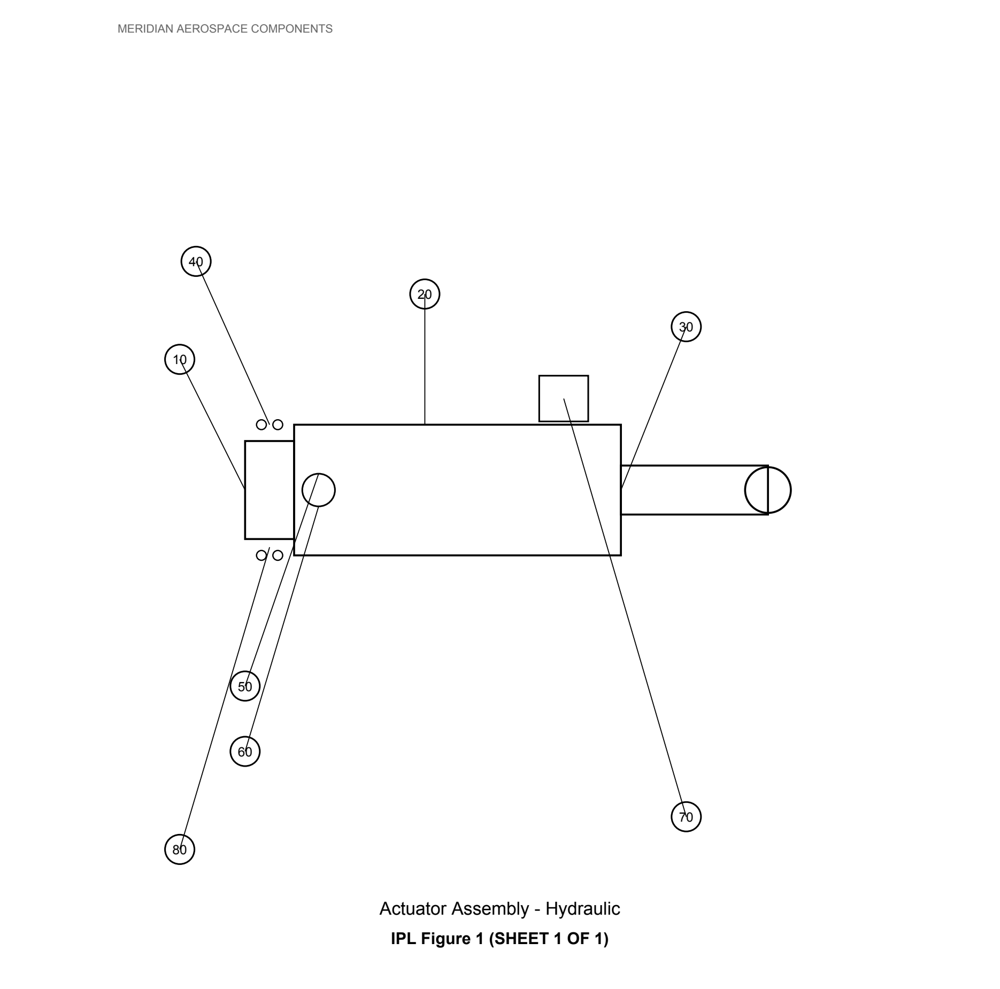

IC Catalog reads your Illustrated Parts Catalogs, recognizes figures and parts lists, and links every numbered tag to its matching row — ready for your database.
Request a demoFrom a PDF hundreds of pages long, line by line.
Every transcription error, in a technical catalog, isn't an inconvenience — it's a risk.
Three steps, with no manual intervention on the data until final review.
Reads text and tables, understands standard Illustrated Parts Catalog terminology: Usage Code, Model Apply Code, assembly indenture.
Every number on the drawing automatically links to the matching row in the table — not just text extracted blindly.
If a part number combination violates the catalog's rules, the system won't let it through.
Every tag on the drawing is already linked to its matching row in the table — try it yourself.
👉 Click a number on the drawing, or a row in the table

| Item | P/N | Description | Qty |
|---|---|---|---|
| 10 | MAC-29110-10 | ACTUATOR BODY | 1 |
| 20 | MAC-29110-20 | PISTON ASSY | 1 |
| 30 | MAC-29110-30 | ROD END | 1 |
| 40 | BACS30BB4 | BOLT | 4 |
| 50 | MAC-29110-50 | RETAINING RING | 1 |
| 60 | MAC-29110-60 | SEAL PACK | 1 |
| 70 | MAC-29110-70 | POSITION SENSOR | 1 |
| 80 | NAS1149F | WASHER | 4 |
Sample data (fictional component and manufacturer, no real customer data) — the process is identical on a real catalog.
The same engine also recognizes Repair sections in the Component Maintenance Manual — with everything needed to actually perform them, not just read them.
For every Repair, the list of consumable materials is extracted and linked to suppliers — no more hunting for part numbers in the PDF with the component already disassembled.
Every Repair becomes a sequence of numbered steps, with references to the drawing's items already linked — the technician follows, doesn't interpret.
Goodrich, Airbus S1000D and other formats — every manufacturer writes its Repairs differently, the engine recognizes the right structure for each one.
Real-world example: a technician opens the component's record, finds the Repair procedure already broken down step by step with the consumable materials needed — and if a part is out of stock, orders it from the same screen, without ever going back to the original PDF.
Everything flows into inter-catalog: the online platform where your shop tracks the full maintenance lifecycle of a component — not just what the manual says, but what was actually done.
Opened, closed, reopened — always with who and why. Never a lost step.
Email confirmation code before closing a task — one procedure performed, one identified person responsible.
Signed procedures, replaced materials, execution times — all in a single document, whenever you need to prove it.
Part number out of stock? Direct link to suppliers, from the same screen your purchasing office already uses.
IC Catalog prepares the data. inter-catalog puts it to work on the shop floor.
Demo login ready to use — demo@ic-catalog.it / MeridianDemo2026! (same sample catalog shown above)
No commitment. I'll show you how it works on your own catalog.